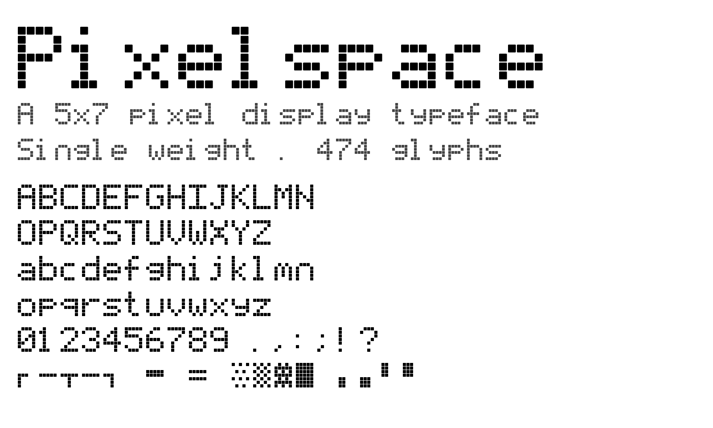

Pixelspace is an original pixel display typeface drawn on a 5×7 cell grid, with a built-in one-pixel right-side bearing that effectively makes every glyph occupy a 6×8 box. It ships a single monospaced Regular weight covering the full Google Fonts Latin-core set — uppercase A–Z, lowercase a–z, digits 0–9, ASCII punctuation, Latin-1 Supplement, Latin Extended-A/B, general punctuation, currency symbols, smart quotes, and combining diacritics — plus most of Unicode Box Drawing (U+2500–257F) and Block Elements (U+2580–259F) for terminal and TUI work. 474 glyphs in total, enough to set modern European Latin text without substitution and to drive the borders, dividers, and bar charts of a real terminal session.
Pixelspace leans into the honest geometry of pixel type rather than simulating it. Each "on" cell in the 5×7 grid is drawn as a softly rounded square — 110 units wide inside a 125-unit cell, with roughly a 10% corner radius and a deliberate 15-unit gap to its neighbours on every side. The result is a crisp, airy texture that reads like a low-resolution display captured at the moment just before the pixels bleed together. There is no anti-aliasing, no hinting magic, and no attempt to smooth edges: the shape primitive is the pixel itself, baked straight into the outlines.
The family is monospace by construction. Every glyph advances the same 750
units — five pixel columns of ink plus a sixth column of right-side
bearing — so columns of text land on a perfect grid. Uppercase
letters, lowercase letters, digits, and most punctuation sit fully above
the baseline inside the five-row ink zone. The descenders on
g j p q y and their accented cousins
extend two rows below the baseline, giving the face a real descender
without breaking the cell grid.
Pixelspace is built for display. It reads best at integer multiples of its native 7-pixel cell height — 14 px, 21 px, 28 px, 49 px, 70 px, 105 px, and so on — where every glyph-pixel lands on a whole device pixel and the rounded-square texture stays true. Off-grid sizes still work, but the softness of the rendering flattens the airy gap that defines the face. Posters, headings, splash screens, editorial callouts, game UIs, retro-computing homages, and any interface where text should feel like it came off a low-resolution display are the natural fits.
Because every glyph advances the same width, Pixelspace also works for short blocks of monospaced copy — code samples, scoreboards, countdown timers — provided the size is generous enough for the pixel shapes to assert themselves. At body-copy sizes the face gives up too much legibility to its own geometry; use it where the pixel grid is the point.
Pixelspace v1.100 added 156 box-drawing and block-element glyphs, drawn in the same gappy rounded-pixel style as the Latin glyphs rather than the flush, edge-to-edge strokes most terminal fonts use. The trade-off is deliberate: TUI borders read as stitched dotted lines, btop bar charts as columns of LEGO towers, powerline-style triangles as pixel staircases. A vim split or lazygit window framed in Pixelspace is unmistakable on screen, at the cost of the conventional appearance of continuous box-drawing strokes. The face is best paired with a 21 px or 28 px terminal cell so each design pixel lands on a whole device pixel and the airy gap is preserved in the rendered output.
The canonical source is sources/glyphs.txt, a plain-text
bitmap file with one @glyph section per character holding
a 7-row by 5-column grid (. for off, # for
on). A Python build script (tools/build_font.py) parses
the bitmap, draws every on-pixel as a 110×110-unit rounded square
with a 15-unit gap to the next cell, and emits real TrueType
(.ttf), PostScript-flavoured OpenType (.otf),
and WOFF2 (.woff2) binaries via fontTools — no
external editor in the loop. Editing a glyph means flipping pixels in
the bitmap and re-running just build. The legacy
sources/Pixelspace.svg is preserved as a versioned
artifact, regenerated from the bitmap source by
tools/bitmap_to_svg.py.
The metrics are tuned for both the pixel grid and the Google Fonts
line-metrics rule. The em is 875 units so that seven 125-unit rows fit the
cell grid exactly; the advance width is 750 units (five inked columns plus
one bearing column); the cap height is 625 and the x-height is 500. The
typographic ascent is padded to 1000 and the descent to −250 with a
line gap of zero, giving a sum of 1250 units — roughly 143% of the em
— which clears the Google Fonts requirement that
ascender + |descender| + lineGap be at least 120% of the
UPM while keeping the visual ink box tightly on the grid.
Pixelspace is licensed under the SIL Open Font License, Version 1.1. It is free to use in personal and commercial work, free to modify, and free to redistribute under the same license. "Pixelspace" is a Reserved Font Name: modified versions are welcome, but they must ship under a different primary family name.